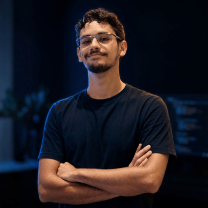
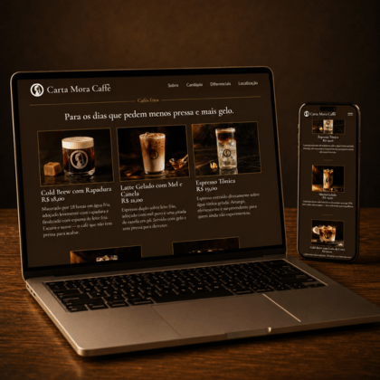
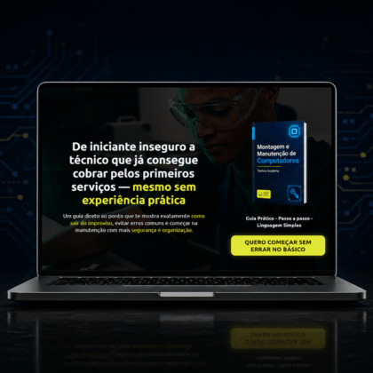
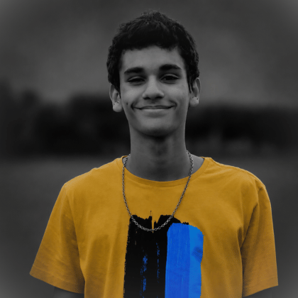

Lucas_Fritsch
Graduando em Ciência da Computação e Desenvolvedor Web júnior. Criador de Sites Institucionais e Landing Pages
Conheça meus projetos em destaque

Carta Mora Caffè - Institucional
Website institucional da Carta Mora caffè, uma cafeteria de alto requinte. Design system, copy e layout criados do zero. Embora o cliente seja ficional, a qualidade da entrega pode ser atestada. Veja ao vivo apertando no botão.

Techna Academy - Página de Vendas
Página de vendas de um e-book da Techna Academy, uma empresa fictícia de cursos e treinamentos de TI. A entrega incluiu protótipo com design, copy, desenvolvimento em código e inclusão de ferramentas de análise de tráfego.
Descubra mais sobre mim:

Lucas Fritsch
Desenvolvedor Web • Graduando de Ciência da ComputaçãoSou um Desenvolvedor Web júnior, com experiência real em atividades administrativas, atendimento ao cliente e criação de sites. Estudo Ciência da Computação pela Uninter e estou a todo momento aprendendo tecnologias novas para realizar entregas com cada vez mais qualidade. Já atuei em organizações como SENAI, Boa Esperança Agropecuária e Colégio La Salle.
- Programação
- UI Design
- Frond End Web
- Freelancer